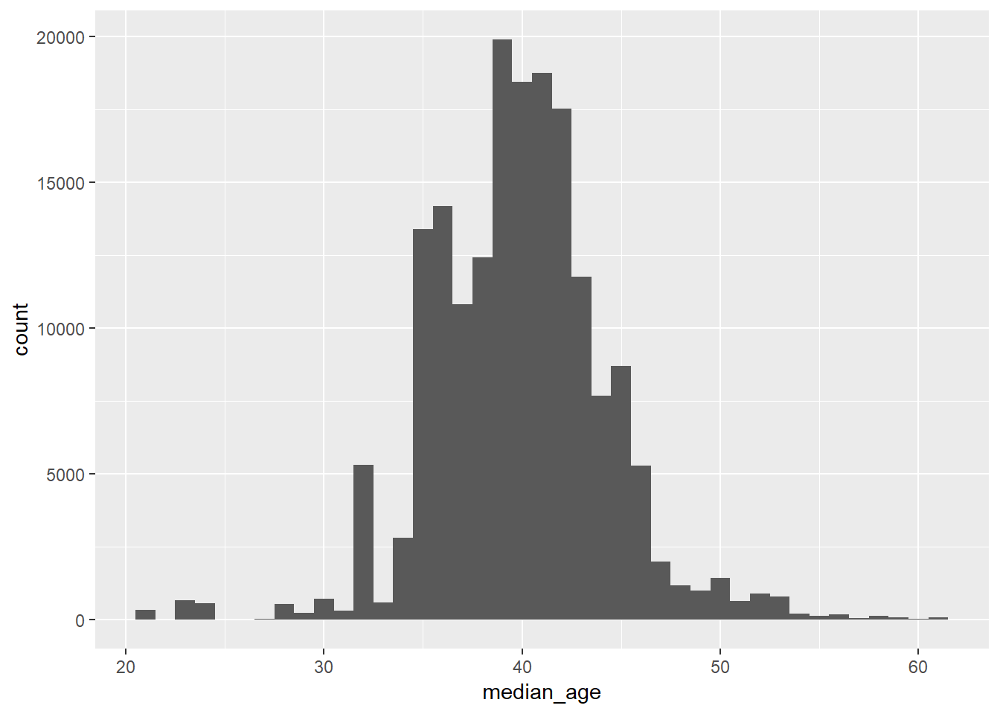

Throughout the course we will make use of he experimentdatar data package that contains publicly available datasets that were used in Susan Athey and Guido Imbens’ course “Machine Learning and Econometrics” (AEA continuing Education, 2018). The datasets are conveniently packed for R users.
You can install the development version from GitHub
Load the experimentdatar package
Load the social dataset
(You can find information about variable definitions using ?social.)
Use dataDetails() function to open the paper associated with the social dataset
Load the dplyr and display the response (outcome_vote) and treatment variable (treat_neighbors)
library(dplyr) # for data manipulations
social %>%
select(outcome_voted, treat_neighbors) %>%
head()## # A tibble: 6 x 2
## outcome_voted treat_neighbors
## <int> <int>
## 1 0 0
## 2 1 0
## 3 1 0
## 4 0 0
## 5 0 0
## 6 0 0Use ggplot2 to plot the distribution of the median income of survey participants
## Warning: package 'ggplot2' was built under R version 3.5.1
charitable: Data used for the paper “Does Price matter in charitable giving? Evidence from a large-Scale Natural Field experiment”
by Karlan and List (2007).
IVdataset: Data used for the paper “Does compulsory school attendance affect schooling and earnings?”
by Angrist and Krueger (1991) and related papers.
mobilization: Data for the paper “Comparing Experimental and Matching Methods Using a Large-Scale Voter Mobilization Experiment”
by Arceneaux, Gerber, and Green (2006).
vouchers: Data for the paper “Vouchers for Private Schooling in Colombia: Evidence from a Randomized Natural Experiment”
by Angrist, Bettinger, Bloom, King, and Kremer (2002).
secrecy: Data for the paper “Ballot Secrecy Concerns and Voter Mobilization: New Experimental Evidence about Message Source, Context, and the Duration of Mobilization Effects”
by Gerber, Hubers, Biggers, and Hendry (2014).
social: Data for the paper “Social Pressure and Voter Turnout: Evidence from a Large-Scale Field Experiment”
by Gerber, Green, and Larimer (2008).
welfare: Data for the paper “Modeling heterogeneous treatment effects in survey experiments with Bayesian Additive Regression Trees”
by Green and Kern (2012).
A website created by Itamar Caspi using RMarkdown.
Disclaimer: This website and its content do not necessarily reflect the views of the Bank of Israel or any of its staff.